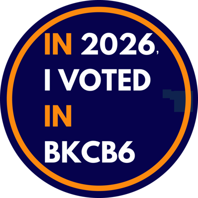

Brooklyn Community Board 6 · General Election, Tuesday, November 3, 2026

An attempt to explain your November 3 ballot
The front of the ballot has the statewide races every New Yorker votes on, then the races for your own districts. The back has five City Charter questions, the same in all five boroughs. Enter your address or pick a community board to see your races and candidates. Each race and question appears as it does on the ballot; tap More info for details.